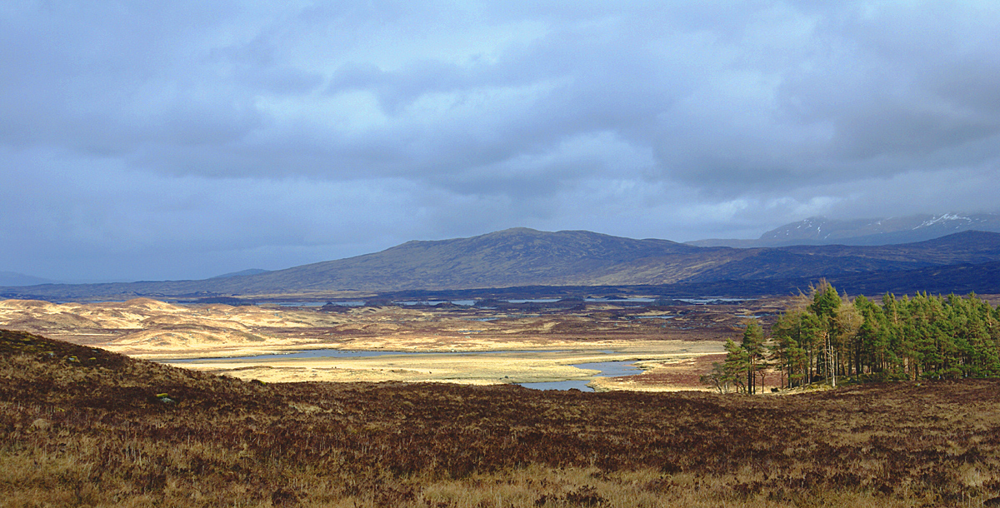
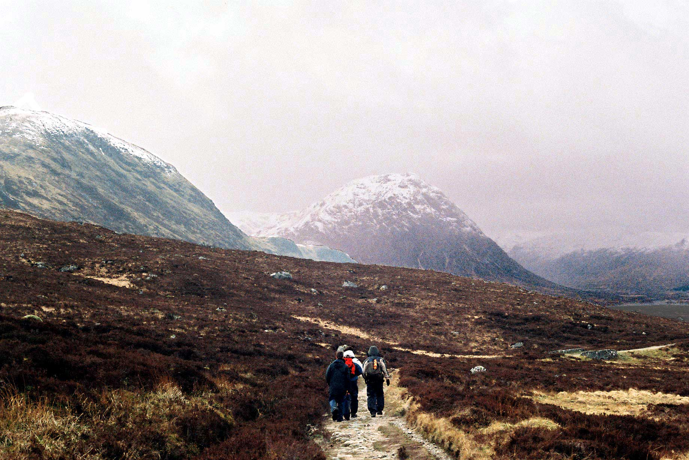

Next Adventure: Walking the West Highland Way in Scotland
People keep asking me what my next travel plans are, so I thought I would give a little update. While I used to only come back to Canada for a month or two at a time, now that I have my own cottage in Canada I tend to spend longer periods here. Plus, while last year I dabbled in renting my cottage out while I was gone, it's really only the summer months that seem to appeal to most renters; so it makes more sense for me to travel then so I can rent my cottage out and at least break-even while gone.

West Highland Way, Photo By Mogens Engelund
So for my next adventure, I've chosen to walk The West Highland Way, an approximately 150km trail that runs from just outside Glasgow, Scotland, to Fort William. As the name implies, part of the trail takes a person through the beautiful Scottish highlands.
Last April I walked an 800km portion of the Camino de Santiago between St. Jean Pied de Port, France and Santiago de Compostela, Spain. It was a great experience, and definitely one of the highlights of the past few years. While I didn't always adhere to the pilgrim lifestyle (as evidenced by the occasional hotel I stayed in along the way), I did what I could to keep it rustic, such as carrying my own pack for the entirety and staying in pilgrim accommodations when I could.
But after spending 32 days walking as a pilgrim through Spain, I'm quite content to walk the West Highland Way and take advantage of a few more comforts. For example, right now my plan is to ship my backpack between locations every day and simply enjoy the walk without the majority of my gear on my back. That would mean this time I can actually bring my camera and carry that with me during the days. I purposefully left it behind on the Camino because it would have added 2.5 lbs to my pack, but if I am only walking with a small day-pack, I can at least bring my micro four-thirds camera and one or two lenses. I was able to snap a few good shots with my iPhone on the Camino, but it's no substitute for a dedicated camera. And plus, it would be fun to stop and take more photos along the way (assuming there is a break from the rain).

West Highland Way, by Colin Souza, edited by dave souza - Own work, CC BY-SA 2.5, Link
Knowing that I'm going to ship my bag each night means I can also bring a few more comforts, such as a nice sweater and pair of jeans for the evenings. One activity I wish I would have done more of on the Camino was to sit and write each evening - so I'm definitely hoping to do more of that on the West Highland Way.
I'm still in the early stages of planning (and in truth, I'm more of a non-planner, so I'll likely just book a flight and have a rough idea in my head for how this will play out). Walking 150km shouldn't take more than eight days of walking, but I'm in no hurry so I may just stop and take the odd day off if the weather is nasty or I find a cute place with a fireplace where I can sit and write.
I have friends coming for a visit back in Canada in July, so right now my plan is to be in Scotland for the first two weeks of June, and then I'll probably explore somewhere new on my own (or with some of my Europe friends I haven't seen in a while) for the second-half of the month. But I'm really close to booking my first-leg to Europe, and I'm really looking forward to my second long-distance European walk.